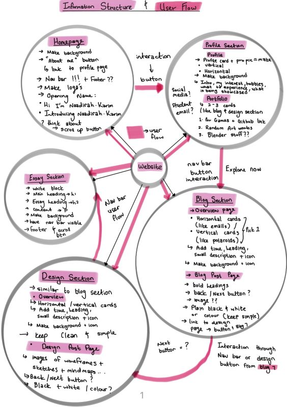
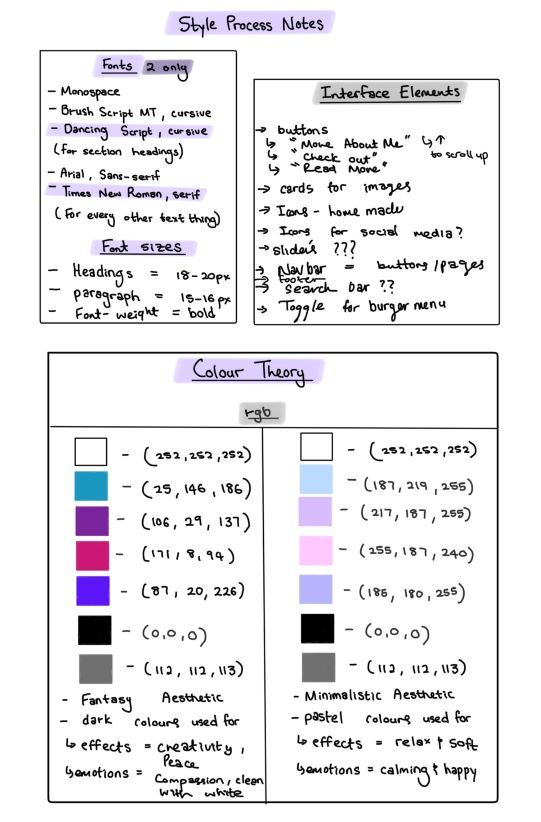
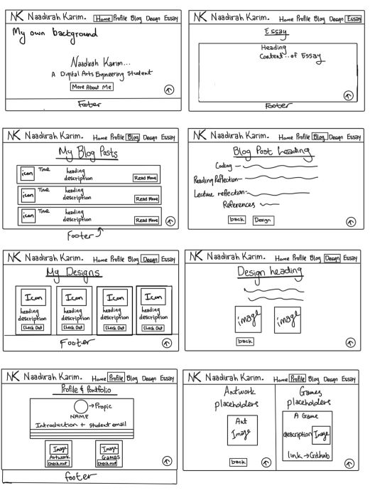
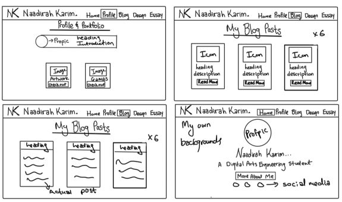

IxD Process
Goal Alignment-
My goal for my website is to give my users an experience that entails not only easy navigation, effective interface, smooth responsive design, user-friendly and operational elements but also to portray most of my personality throughout my website. The users I aimed this website towards besides my markers would be my peers and most importantly would be used for future internship programmes. My content is based on the courses material and the development of a website (this website).
Information Structure-
This comes into relation with my wireframe planning as I would like some areas to be more separated than others. I have had to change some of my decisions once I started building my website. I aimed to create my website to be clean and simple.
User Flow-
My user's movement is not necessarily in chronological order. My user has the freedom to explore my webpages by choosing what content they would like to look at by simply using the navigation bar and the interaction points such as buttons.For the best user experience I would recommend going in the order of the navigation button names starting on the Homepage, than the Portfolio page, Blogs page, Design page and the Essay page.
Information Structure and User Flow Representated as a Mind Map
Interface Elements-
I used input controls the most as my interaction points, my website is simple and requires simple interface elements to enhance better a better user experience.
Buttons
Commonly used in many websites, I made a “More About Me” button that takes the user to my profile webpage. I've made “Read More” buttons to access my blog posts from the overview blog post page. In my blog post 7, the blog links to the IxD UI UX Process. Under the post I have added the design button that takes the user straight to that design post page. Similar to the "Read More" buttons, I've created “Check Out” buttons to access my detailed design processes under specific headings in my design section. In the portfolio projects section, blog posts section, design posts section and essay posts section have a return button which is represented by an arrow that allows users to return to the overview pages from the actual post. The reason why this was developed was because I added back and next butttons which are represented by arrows to allow users to go to the next post page or the previous post page without having to go to the overview page.
Icons-
These icons are more for presentation layout for the blog, design, and profile section. They are used to enhance the aesthetic I was going for to make the website visually appealing and calming. I have used Icons from FontAwsome such as the burger icon and the upward arrow icon.
Toggles-
I used the burger button in my website for a slider navigation menu. This can only be accessed when the screen is sized down to about 858pixels - 900pixels of max-width. I made this in response to mobile responsive layouts for users to be able to access my website on not only their desktop or tablet but especially their smaller devices such as mobile phones. I have added a to the top toggle button that allows a user to get back to the navigation bar without having to worry to scroll back to the top of the webpage. The search bar is an API used to allow users to search for anything related to the topics displayed on that page to gain more knowledge. In the wireframes design section when u click on one image, you are able to view that image abit more clearer, The format have next and previous toggle buttons and an exit button to return to all the images of the wireframes.
Navigation-
I have made a Navigation bar with text rather than icons as I didn't want to use any icons that could potentially confuse my user once they started exploring my website. I added a footer to my website for decoration, the footer is visible on all the webpages except the blog and design posts because the posts are part of the section page and not on its own, unlike the portfolio page, where the portfolio project sections are a seperate indication to my profile description. I did this to allow uses to first understand who I am an what I am capable by looking into the projects placed below the description.
Style Process Documentation-
I used YouTube to browse videos or website designs especially when it came to how I wanted my blog and design overview sections to look like. I used Pinterest to attain inspiration from minimalistic aesthetic posts that had pastel colours and adopted my own art for my icons, logo, and background art. My wireframes are based on websites that visited, which were portfolio websites on Wix. My wireframe images are resized.
Font Samples: Monospace, Brush Script MT, Cursive, Arial, Sans- Serif, Time New Roman, Serif and Lobster, Cursive. I have used Brush Script MT, Cursive (used for section headings), Time New Roman, Serif (used for all text used throughout the website) and Lobster, Cursive (used for the motivational quotes)
Style Process and Colour Theory Notes
Sketches of Ideas For My Wireframe Designs
Sketches of Ideas For My Wireframe Designs
References:
K2infocom, 2023. How to make Portfolio website using HTML CSS. [Online] Available at: https://youtu.be/k12mubZGWZI [Accessed 30 Mar 2023].
Ahmed, T., 2022. How To Make a Responsive Personal Portfolio Website using HTML & CSS | Stunning Portfolio Website. [Online] Available at: https://youtu.be/fOSpqwM_ZtQ [Accessed 30 Mar 2023].
Avishai Abrahami, N. A. a. G. K., 2006. Wix. [Online] Available at: https://www.wix.com/website/templates/html/portfolio-cv/personal [Accessed 6 Apr 2023].
Team, F. A., 2012. FontAwsome. [Online] Available at: https://fontawesome.com/icons [Accessed 10 Apr 2023].